你在探索器里看到的每一张照片、每一颗被测量的星，背后都有一座真实存在的天文台。它们大多有非常好的官网——只是我们从来不知道它们的存在。
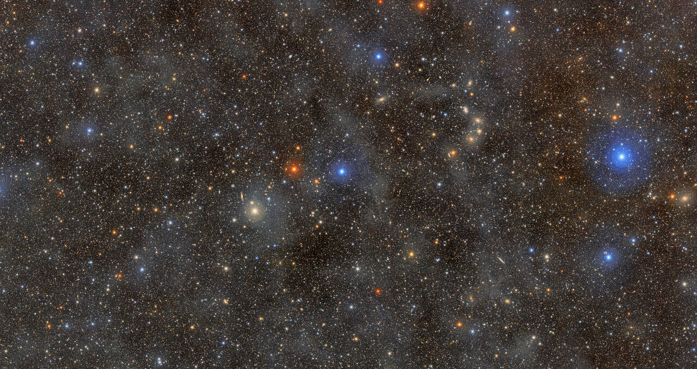
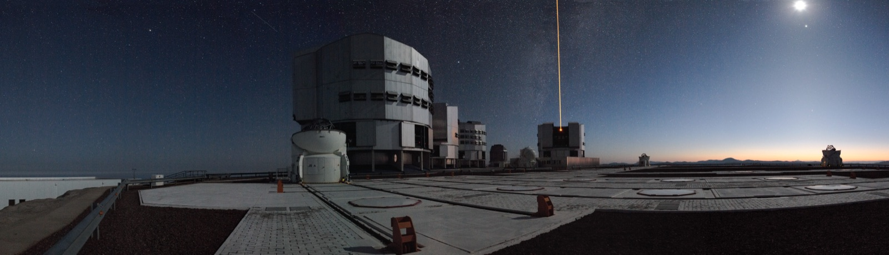
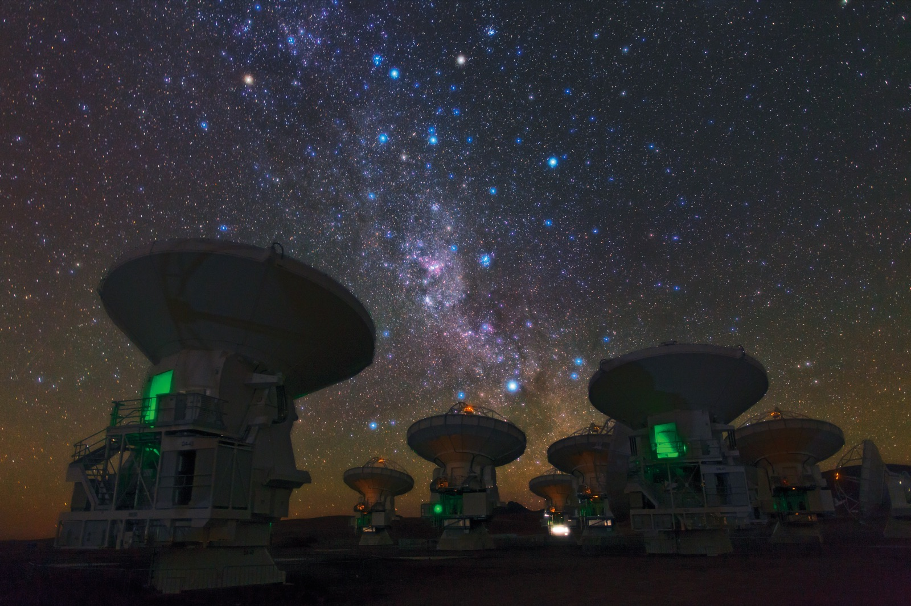
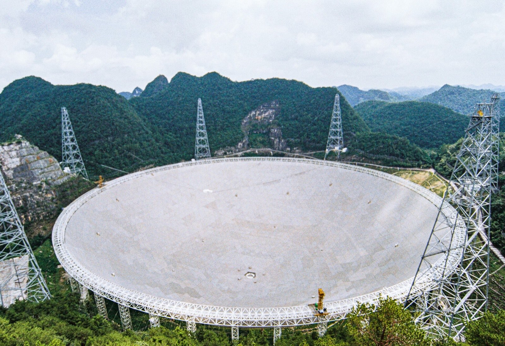
口径 500 米、挂在喀斯特洼地里的全球最大单口径射电望远镜。它不拍照片，而是“听”宇宙的无线电——尤其擅长找脉冲星：恒星死亡后留下的、以毫秒级精度旋转的致密残骸，可以当宇宙里的时钟用。
为什么值得知道：它已经发现了上千颗新脉冲星，是这个领域最高产的设备。
打开官网 →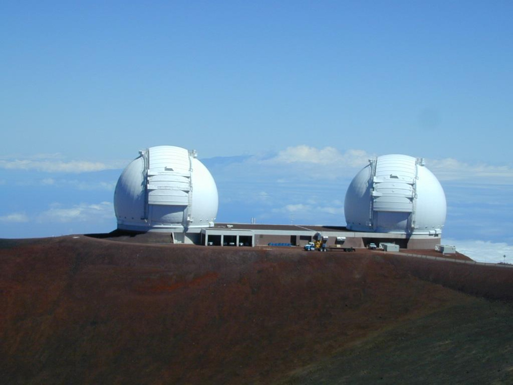
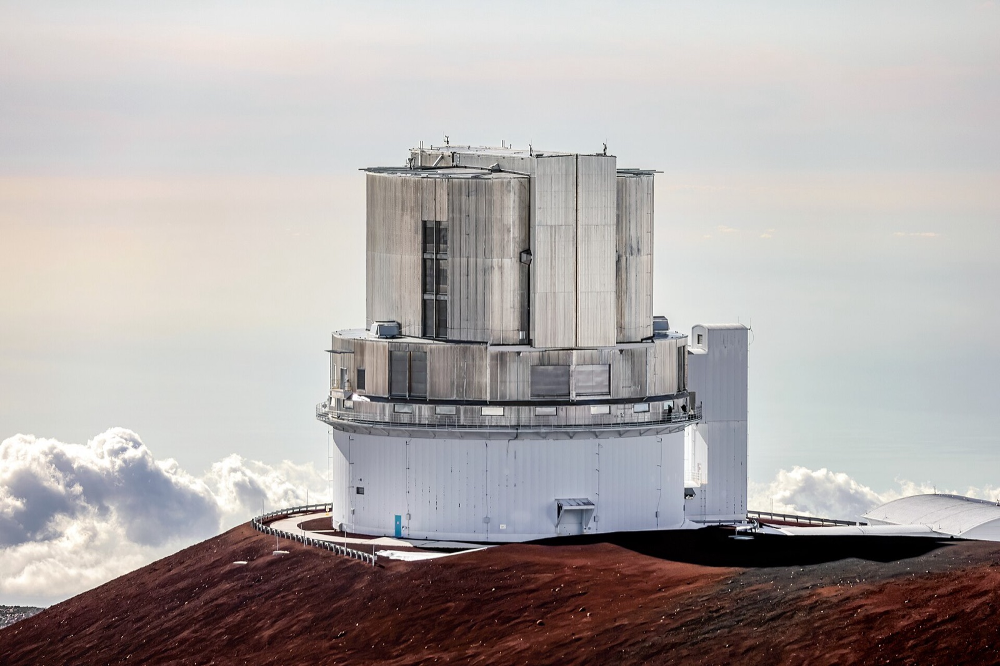
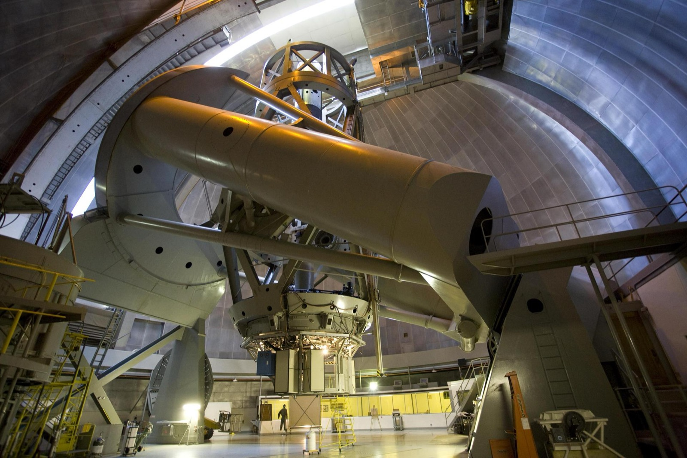
1948 年建成的 5 米海尔望远镜，在之后将近半个世纪里都是世界最大的光学望远镜。你在探索器近景里看到的 DSS2 巡天照片，很大一部分就来自帕洛马的巡天底片——你其实一直在看它的作品。
为什么值得知道：类星体、棕矮星这些名词，都是在这里第一次变成“看到的东西”。
打开官网 →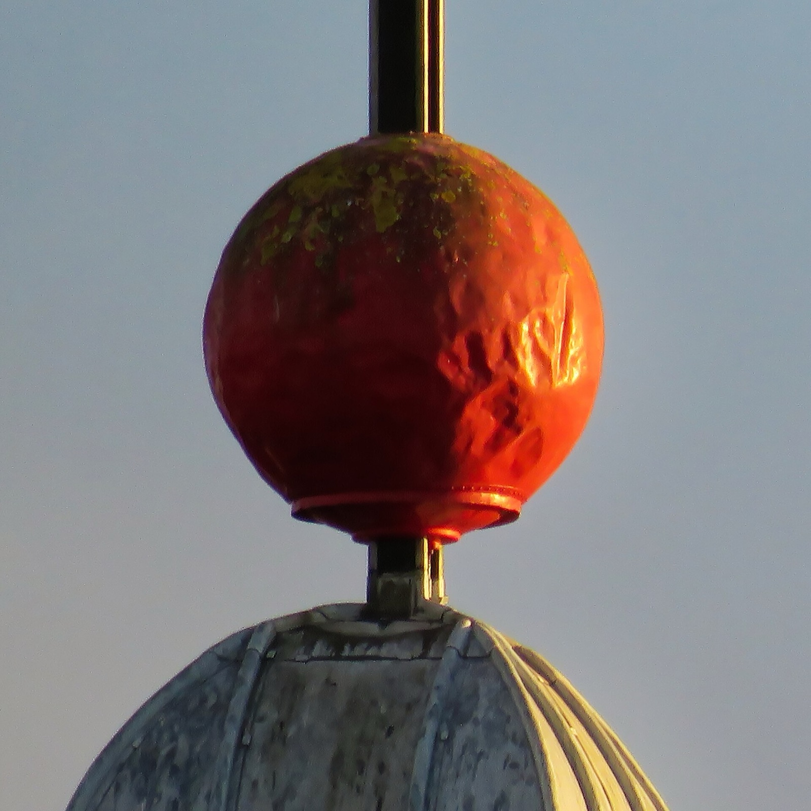
地面望远镜隔着大气看宇宙，这几台干脆飞了上去。你在探索器里点开的每一颗星，背后都有它们的份。
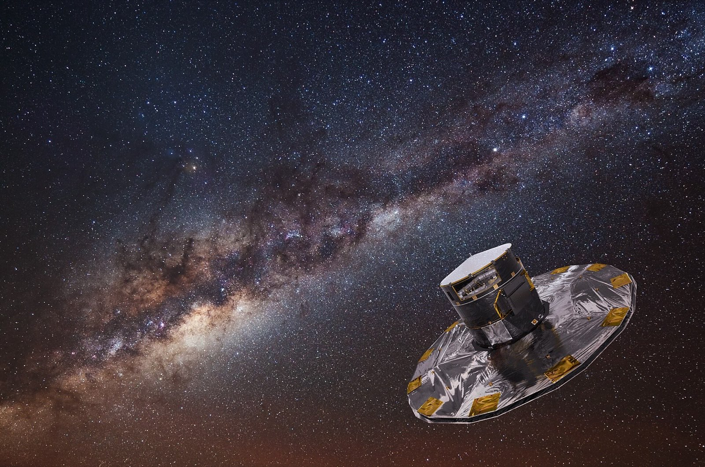
这个网站的主底图就是它画的。它在轨十一年，把十几亿颗恒星的位置、距离和运动测到了前所未有的精度——等于给银河系拍了第一张真正的三维证件照。卫星本尊已于 2025 年 3 月光荣退役，但它的遗产还在增值：完整版星表 DR4 将于 2026 年 12 月 2 日发布，天文学家已经排好队了。
为什么值得知道：你在探索器总览里看到的每一粒光点，都是它认真量过的一颗星。
打开官网 →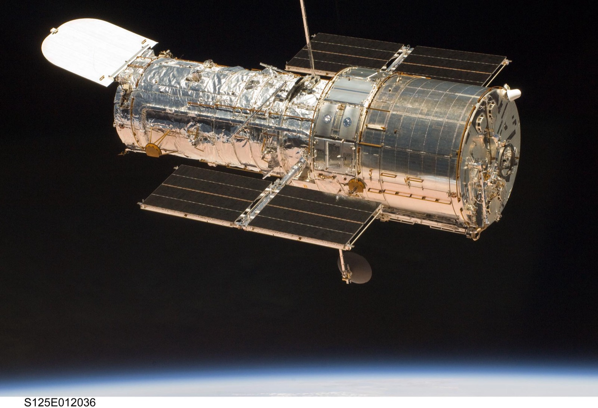
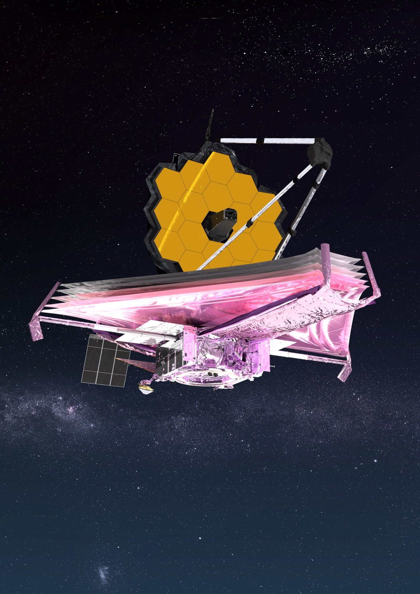
齐天大圣真的在天上：它 2015 年底出发，本来设计寿命三年，结果一干就是十年多，记录了约 185 亿个高能粒子。它不拍照片——它是一台在轨道上的粒子秤，专门称宇宙射线和暗物质可能留下的蛛丝马迹。2026 年 4 月它的最新成果刚上《自然》：发现了宇宙射线加速能量极限的电荷依赖规律。
为什么值得知道：找暗物质这件事上，它是目前人类派出去的主力选手之一，而且严重超期服役、状态良好。
打开官网 →